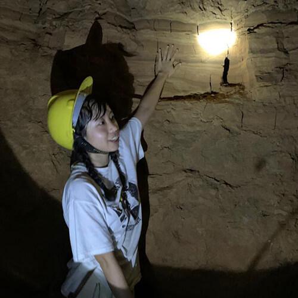
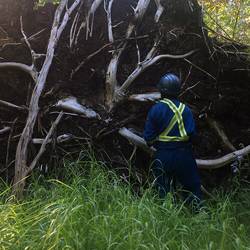

Kelam Cave, MalaysiaWalcott Quarry, Canada

High Level, Canada
B. Sc. (Specialization) Environmental Earth Sciences
Environmental Scientist
Highlights
Developed 4 years of experience in environmental database management and assessment as developed through Phase 1, 2, and 3 Environmental Site Assessments (ESAs).
Coordinated groundwater and soil assessments across Alberta which included client liaison, sub-contractor supervision, field equipment and supplies procurement.
Analyzed and compared laboratory results against Alberta Tier 1 Soil and Groundwater Remediation Guidelines. Developed remediation action plan based on the results various for various clients.